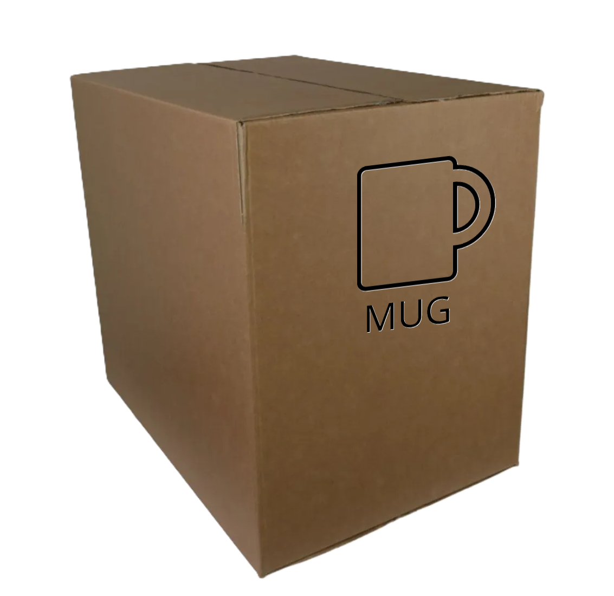

Processo de produção dos produtos MUG
*Video de exemplo. Youtube*
Produção da Caneca de Cerâmica
- Modelagem: O processo começa com a moldagem da argila líquida (barbotina) em moldes de gesso no formato da caneca.
- Secagem: Após a moldagem, a caneca passa por um processo de secagem natural para remover o excesso de umidade.
- Queima: As canecas secas são levadas ao forno industrial e queimadas a altas temperaturas (aproximadamente 1.000 °C) para ganhar resistência.
- Esmaltação: Após a primeira queima (chamada "biscoito"), as canecas recebem uma camada de esmalte vitrificado, que dá brilho e proteção.
- Segunda Queima: Com o esmalte aplicado, as peças voltam ao forno para a queima final, agora a cerca de 1.200 °C.
Personalização
- Impressão da Arte: A arte personalizada é impressa em papel sublimático com tinta especial.
- Sublimação: A arte é transferida para a caneca através de uma prensa térmica, que aquece o papel e faz a tinta penetrar na camada de esmalte.
- Resfriamento: A caneca é deixada para esfriar naturalmente, fixando permanentemente a estampa.
Controle de Qualidade e Embalagem
- Cada caneca passa por uma inspeção rigorosa para garantir qualidade, nitidez da estampa e resistência.
- Depois, são embaladas com cuidado para garantir que cheguem intactas ao cliente.
